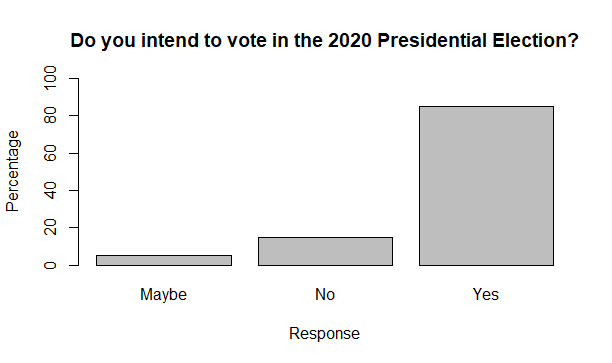
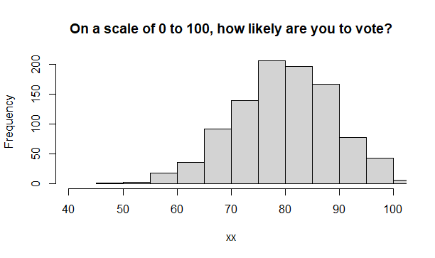

Data Visualization
Overview
This tutorial focuses on data visualization (i.e., graphing) The tutorial includes a combination of videos, text, knowledge check quizzes, and exercises.
The PowerPoint slides for the presentation in the videos are on Canvas if you want a copy. For those not enrolled in my class, these files can be found here: https://osf.io/9tgxm/
The videos (as well as others) can also be found on my YouTube channel https://www.youtube.com/channel/UC5kDZTyHZlgSgSEa3YQXOig
Packages
This tutorial uses the following packages:
ggplot2for fancy graphslearnrandshinyandrmarkdownfor aspects of the tutorial
These packages should be automatically loaded within this tutorial (but you already installed learnr if you are here). If you are working outside of this tutorial (e.g., working with the data files and trying analysis in R) then you need to make sure that the necessary packages are installed on your computer.
Data
All data files exist within this package, so we can simply call them without reference to a file location.
Fall18 These data represent 115 responses to the class data questionnaire. These included your responses and those from several previous semesters.
med is a version of the same data that includes some variables with missing values to allow for demonstration of some additional functions in lavaan.
denial is the datafile used in exercises. These data examine relationships between climate denial and a variety of other beliefs.
Jylhä, K. M., & Hellmer, K. (in press). Right-wing populism and climate change denial: The roles of exclusionary and anti-egalitarian preferences, conservative ideology, and antiestablishment attitudes. Analyses of Social Issues and Public Policy. https://doi.org/10.1111/asap.12203
The datafile includes the variables CCD (Climate Change denial), ANTIESTABL (Anti Establishment Beliefs), EXCL_ANTIEG (anti egalitarian preferences), TRADVALUE (traditional values), OPENNESS (openness to new experiences), PSEUDOSCI (pseudoscience beliefs), and AGREEABL (agreeableness), AGE (age in years), Gender (three categories), Education (5 categories, and ed (education split into college grads vs. non grads)
All files are on the class’ Google Share drive if you want to work with them outside of the tutorial. They are already loaded in this tutorial so you will not need to load the data as you work. (Note: If you are not in my class, these files can be found here: https://osf.io/9tgxm/).
Videos generally range from about 10 to 15 minutes long (there are five of them).
Video 1
Video 1: Introduction
Quiz 1
 
Video 2 Graphs for Nominal and Ordinal Variables
Levels of measurement
Recall, from an earlier module that we generally deal with three basic types of variables, nominal, ordinal, and interval/ratio (technically, this is four but the interval/ratio distinction is not relevant to the use of different approaches).
Nominal and ordinal variables are more broadly termed “categorical” variables as data represent categories. We often assign numbers to categories (e.g., 0 = No and 1 = Yes) but those numbers do not allow for mathematical operations.
Nominal variables are those where categories reflect only names. Those values can be arranged in any order without loss of meaning. For example, a variable that addressed ethnic background with responses of 1 = African American, 2 = Asian American, 3 = Latino/Hispanic, 4 = White, 5 = Native American, and 6 = Multiracial, could be reorganized to 1 = Latino/Hispanic, 2 = African American, 3 = Asian American, 4 = Native American, 5 = White, and 6 = Multiracial, without losing meaning.
Ordinal variables are those where the order matter. For example, 1 = Low, 2 = Medium, 3 = High cannot be reorganized in any manner because those categories represent a specific order.
Interval/ratio variables are those where the numbers simply represent numbers on a continuum from low to high. These are often called “continuous” variables. One example of this might be SAT scores range from 400 to 1600. Each individual score doesn’t represent a different category, just a higher or lower value.
Quiz Placeholder - for our class data set, please identify the type of variable.
Code: Nominal/Ordinal Graphs
The code below uses the denial data to demonstrate how to run analyses for making bar graphs. See below the code for explanations.
counts<-table(denial$Education)The table command tells us how many people are in each category. I captured this information for graphing with the part that reads counts<-. As a reminder anything to left of the <- symbol is called an “object” - you can name it whatever you want. We execute the table command on the dataset denial and the variable Education. Note that many commands use the general dataset$variable format.
barplot(counts)This line graphs the object (counts) that has the information about the different categories.
barplot(counts, main="Education Level of 1587 particpants", xlab="Education Category")This code gives the same graph as the one earlier but it adds a title (main) and a label on the x axis (xlab). We could also add a label to the y-axis using ylab. These commands work for most of the graphs we see throughout.
counts<-table(denial$ed)
barplot(counts, main="Education Level of 1587 particpants", xlab="Education Category")Exercise
Using the denial data create a bar graph for the variable Gender. Try to write the code yourself. If you get stuck, you can use the “solution” button.
counts<-table(denial$Gender)
barplot(counts)Video 3 Graphs for Interval/Ratio Variables
Quiz 3
Code: Interval/Ratio Graphs
The code below uses the denial data to demonstrate how to run analyses for making bar graphs. See below the code for explanations.
###Exercises (after )
The following exercise uses the class data (Fall18). Note that for several questions, I’m not telling you what graph to make. That’s for you to decide based on they type of variable and how that matches up to the different approaches we used.
Interactive examples
Video 4 Comparing Groups Using Graphs
Code for comparing groups
##Bonus analyses
In this section we examine a few different approaches.
Getting %s for your bar graphs
Violin plots
Violin plots are actually density plots. That are mirrored and on their sides.
ggplot(denial,aes(x=Education,y=PSEUDOSCI, fill=Education)) +
geom_violin()We can clean up the graph a little by adding more code.
ggplot(denial,aes(x=Education,y=PSEUDOSCI, fill=Education)) +
geom_violin() +
ylab("Psuedo Science Beliefs") +
xlab("Education")+
theme(axis.text.x=element_blank())Equation Examples
\(\huge \overline{x}\)
\(\huge s_{\bar{x_1}-\bar{x_2}} =\sqrt{s_{x_1}^2+s_{x_2}^2 - 2rs_{x_1}s_{x_2}}\)
\(\huge cov_{xy} = \frac{(x-\bar{x})(y-\bar{y})}{n-1}\)
\(\huge r = \frac{cov_{xy}}{s_xs_y}\)
\(\huge z = \frac{\bar{x} - \mu_0}{\sigma / \sqrt{n}}\)